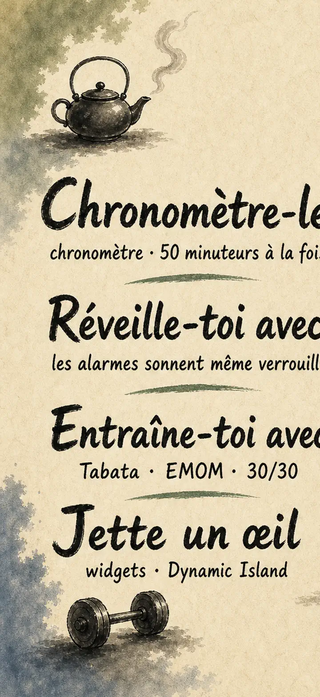
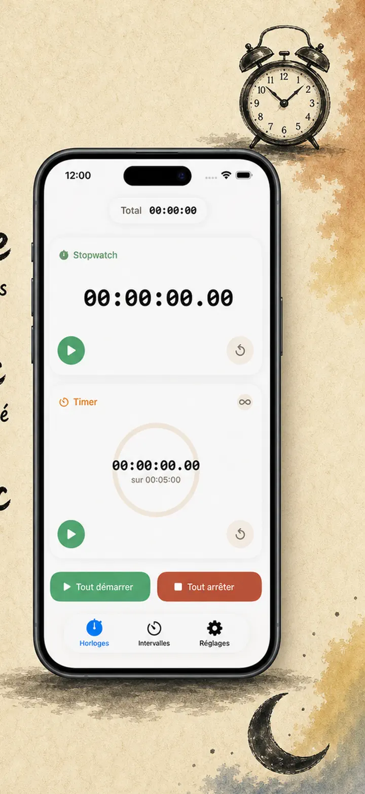
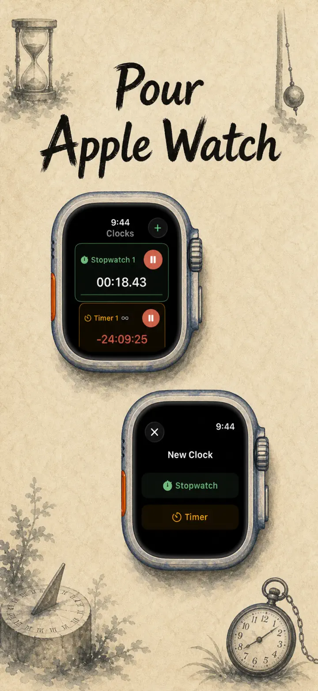
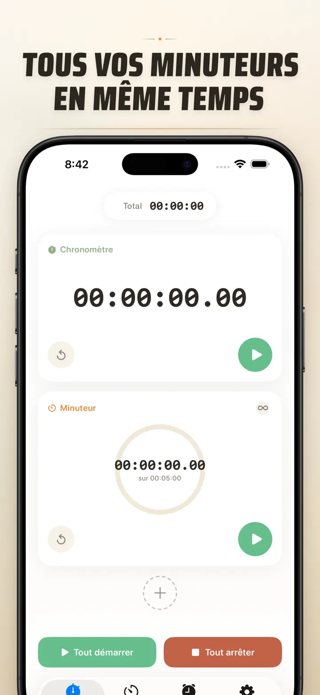
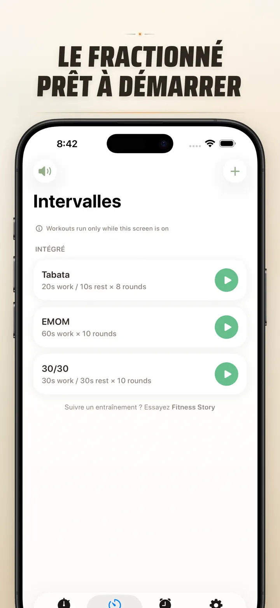
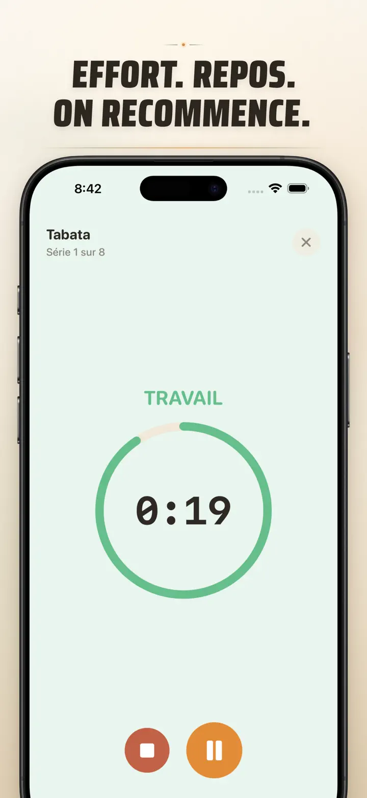
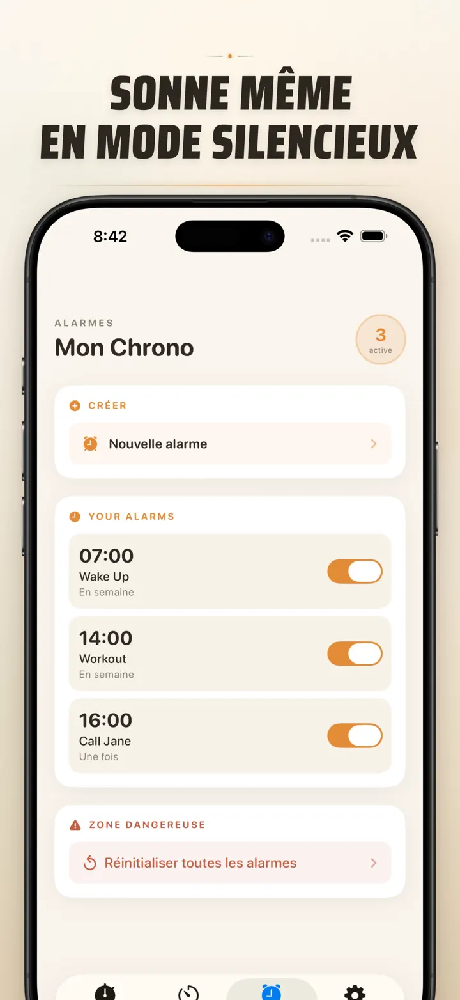

Timer on Me
Minuteur, Alarme, Chrono, HIIT
Découvrez les alarmes datées : une alarme unique pour n'importe quelle date et heure, avec alarmes récurrentes, 50 minuteurs, HIIT & Tabata, et Apple Watch.
Télécharger dans l’App Store
À propos de l’app
Mon Chrono est votre multi-minuteur et chronomètre pour iPhone, iPad et Apple Watch. Jusqu'à 50 minuteurs indépendants en simultané, des séances d'intervalles précises, et des alertes qui sonnent vraiment — même iPhone verrouillé ou app fermée.
ALARMES
- Réveils et rappels avec étiquettes personnalisées et programmation par jour de la semaine
- Propulsées par AlarmKit — sonnent même iPhone verrouillé ou Mon Chrono fermée
- Snooze configurable (3 / 5 / 9 / 15 / 30 minutes) ou désactivé
- Choisissez parmi les sonneries intégrées ou importez vos propres sons
- Activation/désactivation d'un tap depuis l'onglet Alarmes dédié
ENTRAÎNEMENTS & INTERVALLES
- Préréglages Tabata, EMOM et 30/30 intégrés — deux taps pour démarrer
- Éditeur d'intervalles personnalisé : travail, repos et séries en minutes/secondes
- Mode plein écran avec changements de couleur par phase et option silencieux
- Pause, saut et reprise en cours de séance, sans perdre la progression
APPLE WATCH
- Vraie app native watchOS, pas une simple coque de synchronisation
- Plusieurs chronomètres et minuteurs au poignet en même temps
- Chronomètre au centième de seconde
- Complications dédiées pour un accès en un tap
- Fonctionne seule, même sans iPhone à proximité
50 MINUTEURS EN PARALLÈLE
- Jusqu'à 50 minuteurs et chronos indépendants dans une même session
- Démarrage, arrêt et réinitialisation à l'unité ou en groupe
- Répétition automatique pour les séries en boucle
- Les minuteurs continuent après zéro pour compter le temps en plus
- Barres de progression colorées : 50 % en jaune, 10 % en rouge
- Glisser-déposer pour réorganiser, noms personnalisés
ALERTES FIABLES
- AlarmKit : les alarmes sonnent même iPhone verrouillé ou app fermée
- Dynamic Island et Live Activity pour un suivi au premier coup d'œil
- Widgets d'écran d'accueil en taille S, M et L
- Sonneries intégrées : cloches, chants d'oiseaux, téléphones vintage
- Prévisualisation d'un simple tap avant sélection
- Mode « Garder l'écran allumé » pour les longues séances
PERSONNALISER & PARTAGER
- Afficher ou masquer décimales, totaux et pourcentages
- Sauvegarder et écraser des sessions, les recharger en un tap
- Exporter en CSV, JSON ou texte brut
- Partager avec vos collègues, vos élèves ou votre coach
POUR iPhone, iPad & APPLE WATCH
- Mises en page adaptatives sur tous les écrans
- Split View sur iPad
- 34 langues disponibles
IDÉAL POUR
- HIIT, Tabata, CrossFit et circuit training
- Rounds de boxe et arts martiaux
- Pomodoro, révisions, blocs de concentration
- Café filtre, œufs à la coque, pâtes, pâtisserie et four
- Yoga, Pilates, méditation et respiration
- Préparation d'oraux et répétitions d'instruments
- Cours, ateliers et activités de groupe
- Jeux de société et soirées
Téléchargez Mon Chrono et reprenez le contrôle de chaque minute — à la salle, au bureau, à la maison.
Politique de confidentialité : https://masawata.net/privacy-policy.html Conditions d'utilisation : https://www.apple.com/legal/internet-services/itunes/dev/stdeula/
Captures d’écran






Timer on Me
Découvrez les alarmes datées : une alarme unique pour n'importe quelle date et heure, avec alarmes récurrentes, 50 minuteurs, HIIT & Tabata, et Apple Watch.
Télécharger dans l’App Store